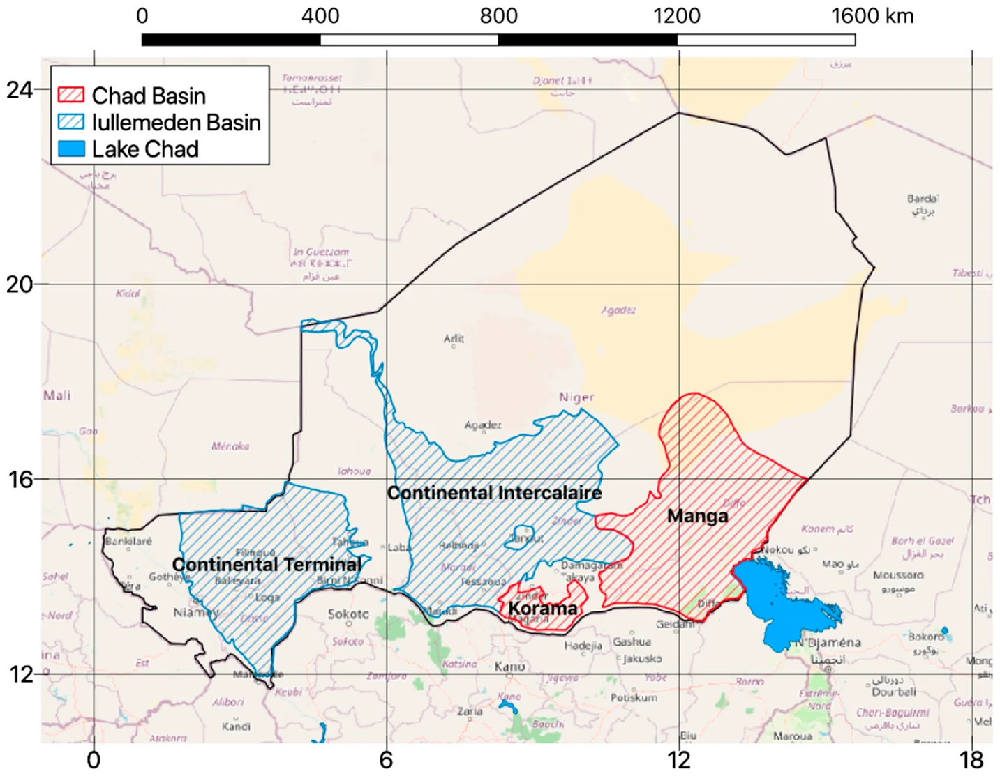
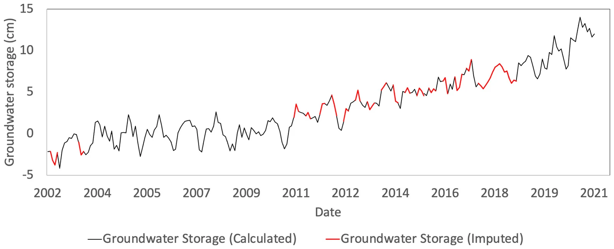
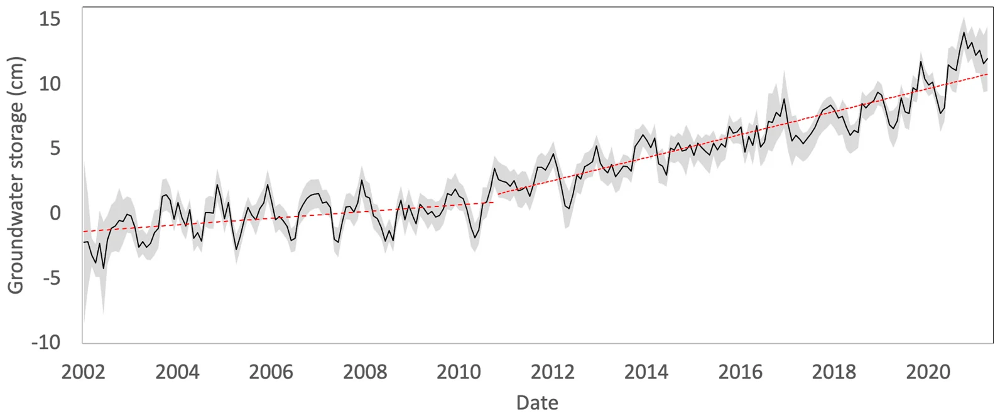
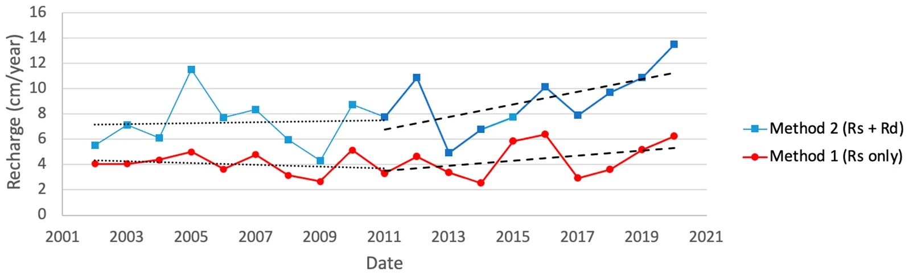

Niger : variation du stockage et recharge dans les bassins des Iullemeden et du Tchad
Article
Barbosa, S. A., Pulla, S. T., Williams, G. P., Jones, N. L., Mamane, B., and Sanchez, J. L. (2022). Evaluating groundwater storage change and recharge using GRACE data: A case study of aquifers in Niger, West Africa. Remote Sensing, 14(7), 1532. doi:10.3390/rs14071532
L'étude a été réalisée dans le cadre du projet NASA SERVIR Afrique de l'Ouest avec le Centre Régional AGRHYMET de Niamey. Elle suit le même déroulement que l'application : calculer la GWSa de chaque aquifère, combler les lacunes de la série et estimer la recharge annuelle par la méthode de fluctuation de la nappe (WTF).
Contexte et données
Le sud du Niger repose sur deux grands bassins sédimentaires. Le bassin des Iullemeden, à l'ouest, couvre environ 620 000 km² et reçoit 550–650 mm de pluie par an ; l'étude a analysé ses aquifères du Continental Intercalaire et du Continental Terminal. Le bassin du lac Tchad, à l'est, couvre environ 2.5 millions de km² et reçoit 200–400 mm par an ; l'étude a analysé ses aquifères du Manga et du Korama. Presque toute la pluie tombe entre juin et septembre, et les puits de surveillance sont peu nombreux.

Aquifères retenus des bassins des Iullemeden et du Tchad. Barbosa et al. (2022), Fig. 4, CC BY 4.0.
La GWSa a été calculée dans GGST à partir de la TWSa des mascons du JPL et de la moyenne des modèles GLDAS Noah, VIC et CLSM, par rapport à la moyenne 2004–2009, d'avril 2002 à septembre 2021. Les mois manquants ont été comblés par décomposition saisonnière : chaque valeur manquante est la tendance de ce mois plus les valeurs saisonnière et résiduelle moyennes de ce mois calendaire.

Données de GWSa mesurées (noir) et imputées (rouge), montrant qu'à l'œil les données imputées respectent la tendance à long terme et la variation saisonnière présentes dans les données. Barbosa et al. (2022), Fig. 7, CC BY 4.0.
Variation du stockage
Dans le bassin des Iullemeden, le stockage a légèrement augmenté de 2002 à 2011, puis beaucoup plus vite de 2011 à 2021, pour une hausse totale de plus de 10 cm d'eau. Dans le bassin du Tchad, le stockage a légèrement diminué jusqu'en 2011 et augmenté de 2011 à 2020. Les précipitations ont augmenté sur la même période, mais la corrélation entre stockage et précipitations était faible (0.2 pour les Iullemeden et 0.35 pour le Tchad, avec un décalage de 7 mois) ; les auteurs suggèrent donc que le changement d'occupation des sols y a aussi contribué.

Anomalies de stockage des eaux souterraines dans la région du bassin des Iullemeden. Barbosa et al. (2022), Fig. 10, CC BY 4.0.
Recharge
Les auteurs ont appliqué la méthode de fluctuation de la nappe à chaque année de la série de GWSa comblée. La Method 1 ne compte que la remontée saisonnière visible et donne une estimation basse ; la Method 2 ajoute le drainage compensé par la remontée et donne une estimation haute.

Valeurs de recharge estimées dans les bassins des Iullemeden. Barbosa et al. (2022), Fig. 17, CC BY 4.0.
L'article a comparé ses moyennes à des études antérieures au Niger (son Table 1) :
| Source | Région | Méthode | Période | Recharge (cm/an) |
|---|---|---|---|---|
| Barbosa et al. (2022) | Bassin des Iullemeden | WTF, GRACE | 2002–2011 | 4.0–7.3 |
| Barbosa et al. (2022) | Bassin des Iullemeden | WTF, GRACE | 2012–2021 | 4.5–9.2 |
| Barbosa et al. (2022) | Bassin du Tchad | WTF, GRACE | 2002–2011 | 2.9–5.4 |
| Barbosa et al. (2022) | Bassin du Tchad | WTF, GRACE | 2012–2021 | 4.1–7.6 |
| Bromley et al. (1997) | Sud-ouest du Niger | Bilan de masse des chlorures | 1992 | 1.3 |
| Leduc et al. (1997) | Sud du Niger | WTF, puits | 1991 | 5–6 |
| Leduc et al. (2001); Favreau et al. (2002) | Sud-ouest du Niger | Radio-isotopes (¹⁴C et ³H) | années 1950–2000 | 0.1–0.5 |
| Leduc et al. (2001) | Sud-ouest du Niger | WTF, puits | années 1990–2000 | 2–5 |
| Vouillamoz et al. (2008) | Sud-ouest du Niger | WTF, puits | années 1990–2000 | 2–5 |
Les fourchettes de cette étude vont de la Method 1 à la Method 2. La Method 1 se situe dans la fourchette des études antérieures par fluctuation de la nappe ; la Method 2 est plus élevée, ce que les auteurs jugent raisonnable pour une période d'accumulation du stockage. Les méthodes par chlorures et par isotopes, qui intègrent des périodes beaucoup plus longues, donnent des valeurs plus faibles.
Conclusions
- Le stockage des eaux souterraines augmente dans les deux bassins depuis une dizaine d'années ; les aquifères ne sont donc pas surexploités et une mise en valeur supplémentaire est possible, à condition de continuer à surveiller le stockage.
- Les données satellitaires ont rendu cette analyse possible là où les séries de puits sont trop clairsemées pour la mener à partir du terrain.
- Présenter les deux méthodes WTF permet d'encadrer la recharge probable.
Pour reproduire cette analyse sur n'importe quelle région, réglez Gap filling sur Seasonal model et ouvrez l'Analyse de la Recharge.